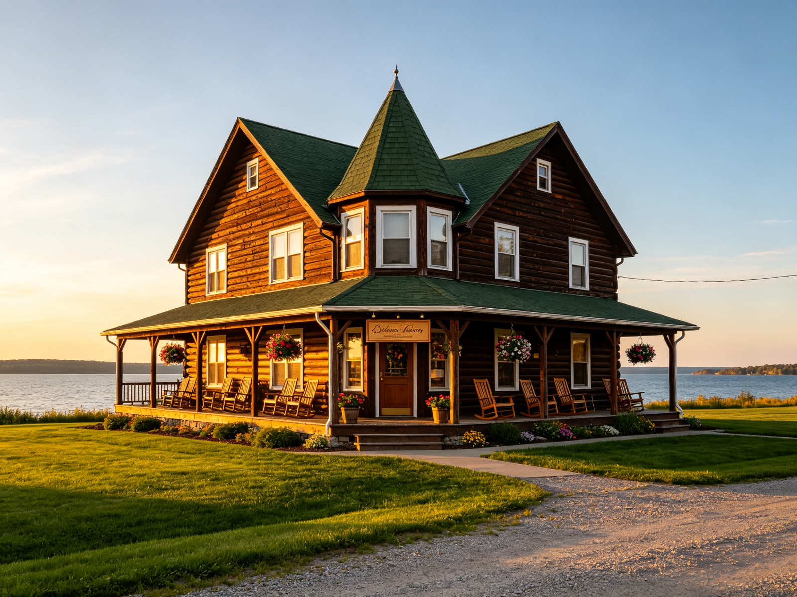

Cycle for Chocolate, 9/6
Join us for 20-mile ride around Bailey's Harbor, touring the sites and stopping for gourmet chocolate.

Make the Great Lakescape Lodge your destination in beautiful Door County.
Nestled on the shores of Lake Michigan at Bailey's Harbor, our lodge is close to everything that Door County has to offer.
We are a family-owned and operated establishment and have been part of the Northern Wisconsin vacation scene for 25 years. The lodge is a great place for a romantic getaway or a family reunion. We also cater weddings and can provide all of the amenities to make your time here a special one.
It's our goal to make every guest feel pampered; from the gourmet breakfast and afternoon tea, to the special touches you will find in every room. Families can enjoy our rec room and pool and outdoor equipment for boating and cycling; but there are also quiet secluded spots for people who are just looking to get away for a restful weekend.
Come and see for yourself what keeps our guests coming back year after year. We are open April 1st to October 31st. If you have never visited Door County before, let us be your guide to the wonderful opportunities that await you.
Join us for 20-mile ride around Bailey's Harbor, touring the sites and stopping for gourmet chocolate.
Start dancing at our monthly square dance in the lodge's spacious barn. Music by the Sam Pulvermacher Group.